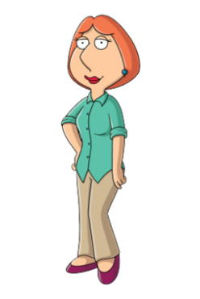
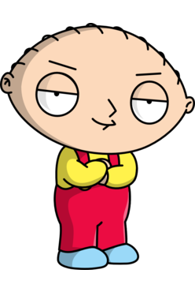

Peter Griffin
Peter Griffin is the father of three children, Meg Griffin, Chris Griffin, and Stewie Griffin. Peter works part-time at the Pawtucket Brewery where he ships out case and cases of beer to their favorite Liquor Bar in Quahog where he spends most of his free time with his three best friends, Glen Quagmire, Cleveland Brown, and Joe Swanson, the Druken Clam or "The Clam", which they call it. Peter is the main character and most peculiar male character in the entire series, other than Quagmire.
Lois Griffin
Lois Griffin is Peter Griffin's wife who is also the mother of their three children Chris, Meg, and Stewie Griffin. Lois' plans are to mostly provide for her family by grocery shopping every chance she gets. She doesn't want anyone else in the family doing groceries because It will drive her to insanity. She's also friends with her next door neighbor Bonnie Swanson and Cleveland's second wife, Donna Brown, who also spends most of their time in a book club with other female friends and later get completely wasted.

Chris Griffin
Chris Griffin is the oldest sibling of Meg and Stewie Griffin. He is also the son of both Peter and Lois Griffin. Chris usually spends most of his time in the bathroom pleasuring himself and seems to get a kick out of it. He also has an elderly man stalking him and trying to get his hands on him the first chance he gets, which is Mr. Herbert, who seems to enjoy chasing after little, teenage, and even adult males.

Meg Griffin
Meg Griffin is the sister of Chris and Stewie Griffin. She is also the daughter of both Lois and Peter Griffin. Meg is the most disrespected character in the show. There has been scenarios where someone in the show thinks Meg is a male, a thing, or in most cases, DISGUSTING! Meg tries hard to get boyfriends that would like her for who she is, not her personality, but nothing checks out for her.

Brian Griffin
Brian Griffin is the pet of the family. Peter Griffin adopted Brian when he was found abandoned on the streets of Quahog. Brian spends most of his time picking up hot chicks anytime he sees them in a relationship, not in a relationship, or just married. He also spends some time at the Druken Clam to take in a couple of drinks after the fun or before the fun takes place. Brian seems to be the smartest and most educated out of the entire Griffin family. Like me, he has a very sarcastic tone in his voice.
Stewart(Stewie) Gilligan Griffin
Last but not least, Stewie Gilligan Griffin, who is the baby of the family, the brother of both Chris and Meg Griffin and the son of both Lois and Peter Griffin. Stewie spends most of his time planning world domination for Quahog and making everyone suffer. You may or may think that just because Stewie is just a baby, he can't do anything. Listen to this..... (1)He has his entire secret closet of preposterous weapons of destruction;MOSTLY MILITARY ARTILLIARY. (2)He talks at an early age of 1. Most babies won't start actually saying words until they're about 4 or 5 years old. (3)He wants to kill his mother for some reason he thinks she is a disgrace to the family or just his life alone. (4)He built his own time machine. (5) HE USES VULGAR LANGUAGE!!